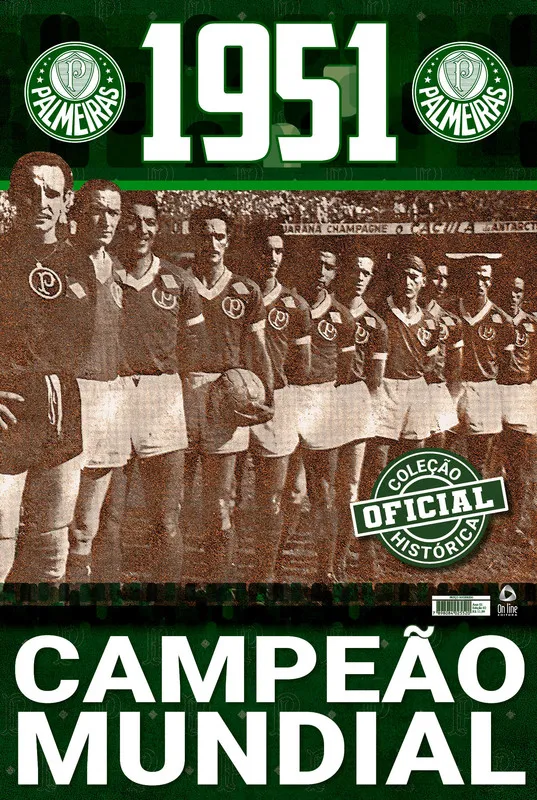

O Palmeiras tem o total de 11 CAMPEONATOS BRASILEIROSkkkkk.
O Palmeiras é o primeiro time do mundo a GANHAR O MUNDIAL DE CLUBES.🏆
O Palmeiras é o primeiro time do mundo a GANHAR O MUNDIAL DE CLUBES.🏆
22 de julho de 1951 o Palmeiras realizou um dos maiores feitos de sua gloriosa trajetória. Foi neste dia, diante da forte e estrelada Juventus-ITA, que o Verdão conquistou o Torneio Internacional de Clubes Campeões,consolidado no futebol como o primeiro campeonato mundial interclubes da história.
A Sociedade Esportiva Palmeiras (SEP) Foi fundada em 26 de agosto de 1914 e suas cores, presentes no escudo e bandeira oficial, são o verde e branco.